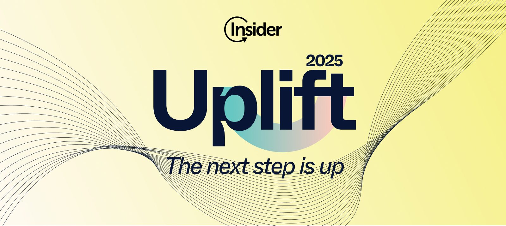
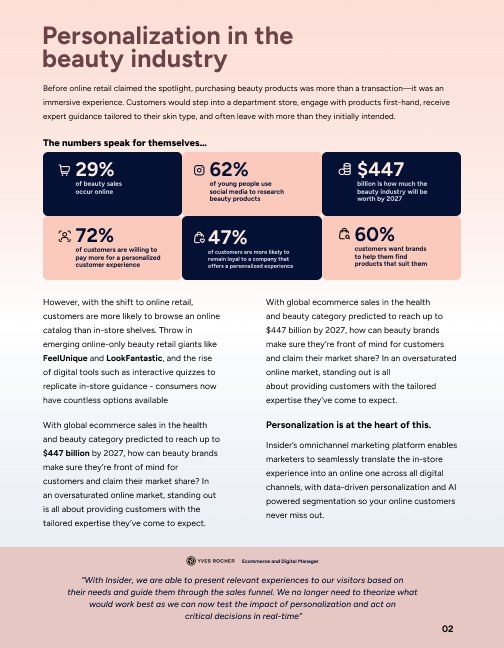
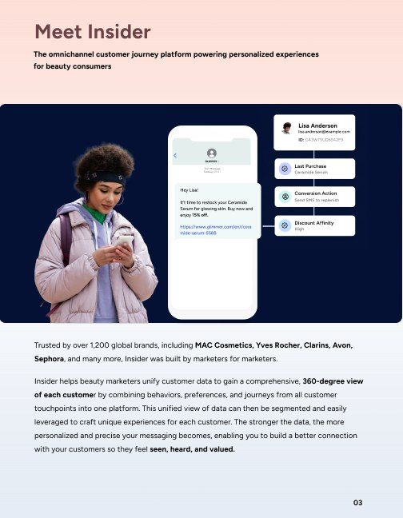
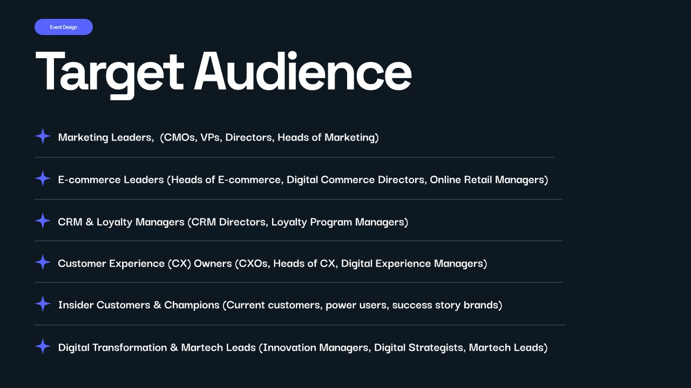
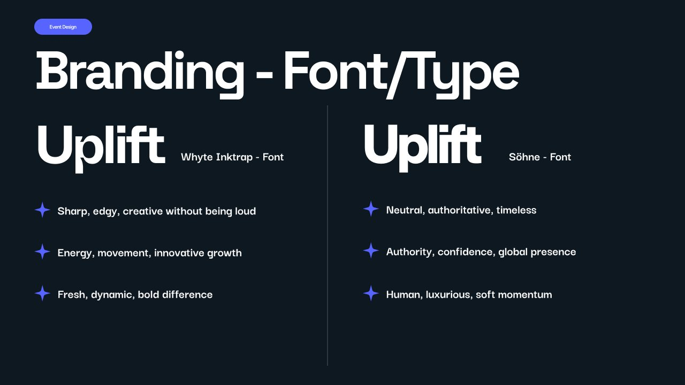
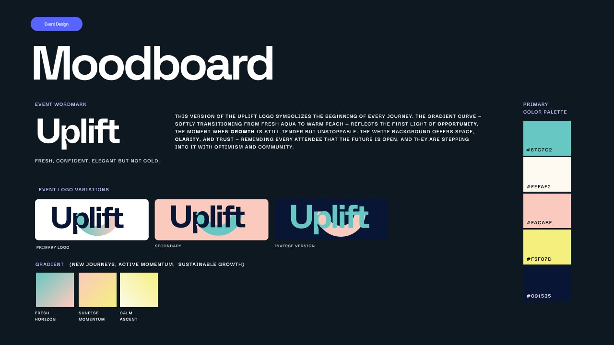
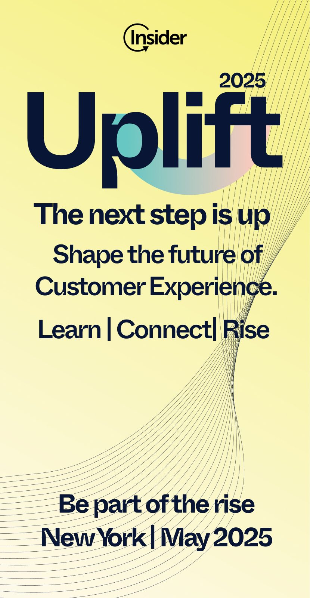
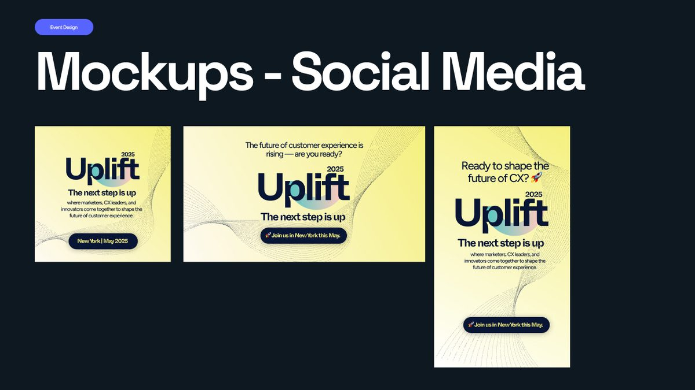
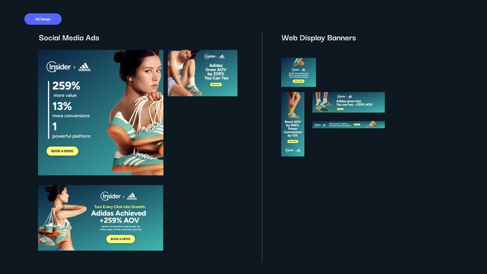

Two linked pieces, one calm system: a beauty growth guide marketers actually want to read, and an event identity that scales from the main stage to a story ad.

Insider helps brands personalise customer experiences. For its beauty and cosmetics push, it needed two things that felt like one brand: an in-depth digital growth guide for beauty marketers, and the identity and promotion for Uplift 2025, its customer-experience event. The guide had dense stats and product screens to carry. The event had to feel credible and energising to senior marketing, e-commerce, CRM, CX and digital-transformation leaders, without tipping into gimmick.
Designed the growth guide: editorial layout, data visualisation, and art direction for the lifestyle photography. Built the Uplift 2025 identity from the ground up: audience mapping, type exploration, moodboard, wordmark and logo variations. Scaled the identity across the stage backdrop, an event standee and social formats. Designed Adidas-led social and web display ads on the Insider system.
1. Start the event identity with the audience, not the logo.
Six senior segments, from CRM managers to transformation leads, had to take Uplift seriously. Mapping them first set the bar: confident and energising, never gimmicky. Every later choice was checked against it.
2. Whyte Inktrap over Söhne for the wordmark.
Söhne brings neutral authority, but this was an event about moving forward. Whyte Inktrap's sharp, slightly edgy cuts gave the wordmark energy while keeping it clean enough for a senior crowd. That made the "next step is up" idea feel like a promise rather than a slogan.
3. One calm system for dense material.
Stats, stories and product screens share a single grid, a restrained palette and generous space. That keeps a data-heavy guide easy to read and on-brand, so marketers actually get through it.


Uplift 2025 needed an identity that could scale from a stage backdrop to a standee to social. Before any of that, the design had to be grounded in who it was for and how it should feel.
The audience framed every decision: marketing leaders, e-commerce leaders, CRM & loyalty managers, CX owners, Insider customers and digital-transformation leads — senior people who needed the event to feel credible and energising, not gimmicky.

The wordmark came down to a type choice with a clear rationale: Whyte Inktrap — sharp, edgy, creative — against Söhne's neutral authority. The moodboard then set the warm gradient palette and the logo variations that carry the "next step is up" idea across the system.


From that groundwork, a bold wordmark over fine contour lines in a warm palette scales cleanly from the stage to a standee to a story ad.



Insider now has a single editorial and campaign system: a guide that positions it as a credible partner for beauty marketers, and an event identity that holds together from the main stage down to a story ad.
Open to opportunities — full-time, freelance and fractional work.
Get in touch →